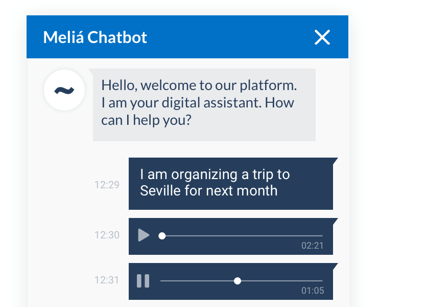
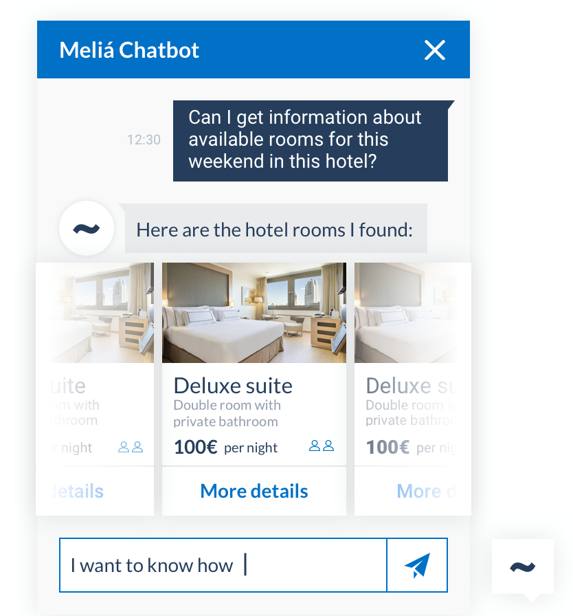
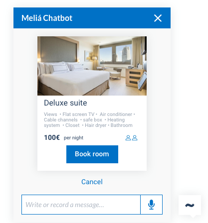

Case study · Voice assistant
From zero to a production voice assistant, before it was trendy.
Meliá, the hotel chain, had no assistant of any kind: no defined user journeys, no persona, no voice for one. I led the project from an in-person discovery session with their team through to a shipped, production assistant, then through a second chapter as it grew from voice-only into a full visual chat component system. This happened in 2019, well ahead of the current AI boom.
Chapter one · Zero to voice
A green field: no journeys, no persona, no voice, and no screen to design.
I ran a 2-day, in-person discovery session on-site in Mallorca with Meliá's own team, including senior stakeholders. We defined the assistant's user personas, its voice and tone, and its core pain points together, on a physical board, co-created with the client rather than researched in isolation and presented back afterward.
Back at the desk, I analyzed a large volume of real recorded Meliá customer conversations to find the actual needs that should drive the assistant's scope, a qualitative-at-scale method built on real conversation data, distinct from a funnel-metrics approach.
The first version shipped voice-only, with no visual interface at all. For a product designer, that's an unusual deliverable: the actual design work here was persona, conversation flow, tone, and information architecture.
Chapter two · Voice to visual
As the assistant grew into chat, voice became a visual system.
As Meliá's assistant expanded from voice into a chat surface, the visual layer entered the story for the first time. I designed a full chat component system: cards, carousels, maps, sliders, audio messages, and tables, built to represent the same conversational logic visually instead of only through speech.



Outcome
Shipped, then it kept generating work.
The assistant shipped to production and was still in active development when I moved on. Meliá was satisfied enough with the result to commission additional use cases and projects, turning this into a repeatable service line for the consultancy behind it, Emergya. Off the back of this work, I gave a talk on virtual assistants at Voice Summit Spain, 2019, in Madrid.
This one kept going: the client came back for more work, it turned into a service line, and it led to a talk on a real stage.